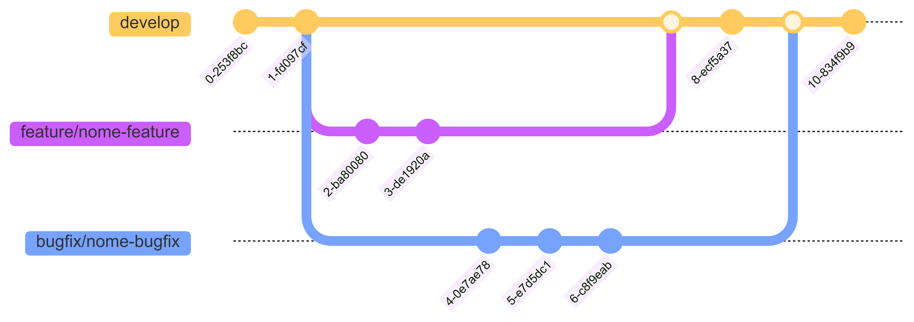
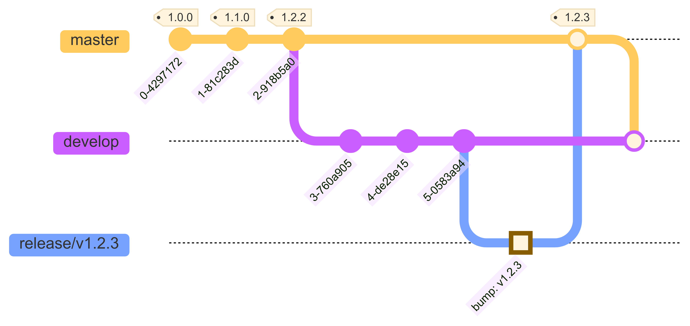
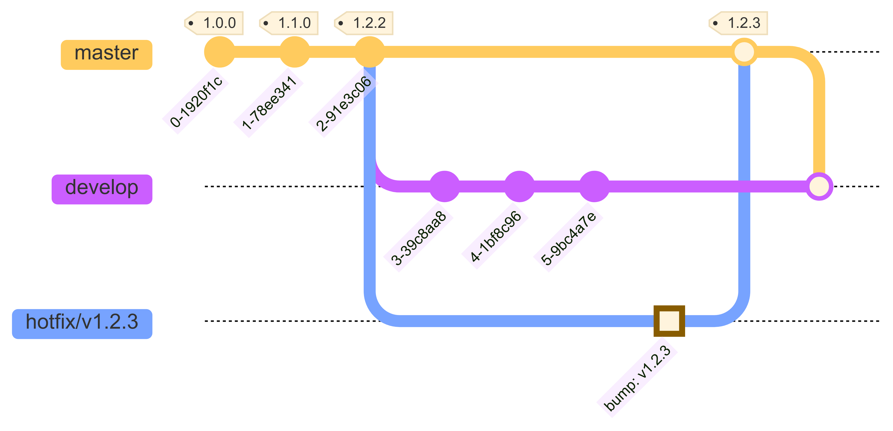

Gitflow
⚙️ Fluxo de desenvolvimento
No projeto Intranet nós seguimos o padrão GitFlow para tratar do versionamento Git, além de boas práticas para escrita de commits utilizando o Conventional Commits e versionamento semântico seguindo o semver.
Fluxo de feature/bugfix

Gráfico do fluxo de trabalho com git para merge de feature/bugfix
Fluxo de deploy (release/hotfix)

Gráfico do fluxo de trabalho com git para merge de release

Gráfico do fluxo de trabalho com git para merge de hotfix
💡 Boas práticas Git
Como boas práticas no versionamento de código usamos o semver
Criação de branchs
[feature/nome-feature] = Branch destinada à desenvolvimento de feature;
[bugfix/descricao-curta-bug] = Branch destinada à resolução de bug produtivo com criticidade baixa;
[release/v0.0.0] = Branch destinada à deploy para geração de release;
[hotfix/v0.0.0] = Branch destinada à deploy para resolução de bug produtivo de criticidade alta;
Padrão de commits
Sempre que possível, utilizar prefixos que definam o contexto da alteração de forma clara e objetiva.
<type>[optional scope]: <description>
Referência: Conventional Commits 1.0.0